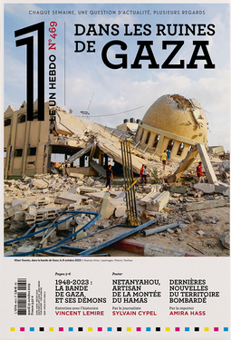
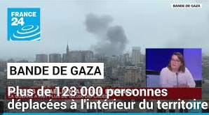
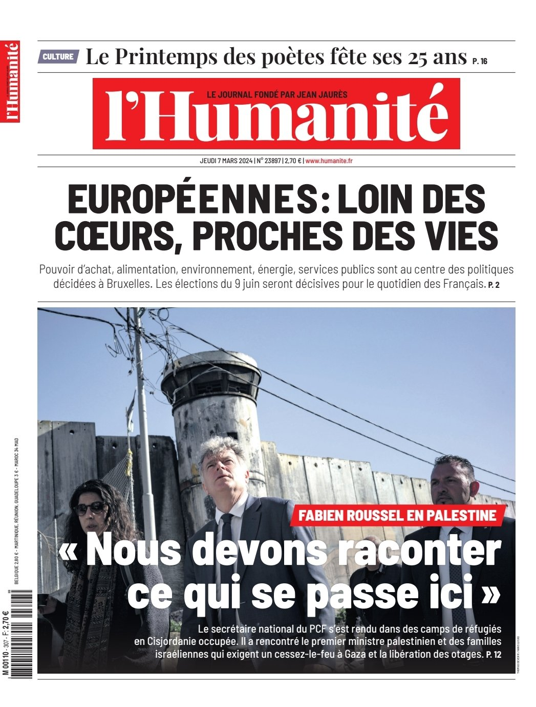

PALESTINE
Benyamin Nétanyahou dénonce « un crime odieux » à la suite de l’assassinat d’un adolescent israélien de 14 ans en Cisjordanie occupée
Le chef du gouvernement de l’Etat hébreu a aussi appelé « tous les citoyens israéliens à permettre aux forces de sécurité de faire le travail sans entrave », sans directement évoquer les colons armés qui, depuis vingt-quatre heures, attaquent les villages palestiniens de la région.
Publié le 13 avril 2024 à 15h32, modifié le 13 avril 2024 à 19h12
Article réservé à nos abonnés La vie suspendue d’une famille gazaouie au Caire
En novembre, « Le Monde » rendait compte du quotidien de la guerre à Gaza à travers les messages qu’échangeait le photojournaliste Sameh-Nidal Rahmi avec une communauté de photographes arabes. Parmi eux, Gabriel Ferneini, qui documente l’histoire de son ami depuis le 7 octobre, est allé le retrouver au Caire après sa sortie de Gaza.
Publié le 08 avril 2024 à 16h30 Nissim Gasteli
Guerre Israël-Hamas : l’Espagne déterminée à reconnaître l’Etat de Palestine d’ici au 1ᵉʳ juillet
Pedro Sanchez invite ses voisins européens à rejoindre Madrid sur cette initiative. Aucune discussion n’a encore été enclenchée à ce stade à Bruxelles par l’Union européenne.
Publié le 07 avril 2024 à 19h41, modifié le 07 avril 2024 à 20h26 Sandrine Morel Philippe Jacqué
Le nord de la bande de Gaza, assiégé par l’armée israélienne, plonge dans la famine
Plus de 300 000 personnes seraient piégées dans cette partie de l’enclave, incapables de la quitter depuis qu’Israël a coupé le territoire en deux.
Publié le 06 avril 2024 à 14h00, modifié le 07 avril 2024 à 02h25